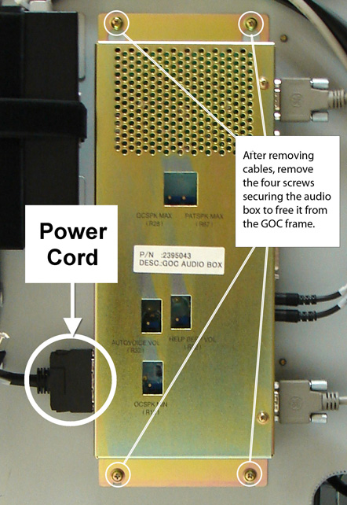

Operating Documentation
Direction 5500113, Rev# 3
Discovery MR750 3.0T Service Methods
Module Version 7.0, Version Date 10/6/09
Operating Documentation |
| Required Persons | Preliminary Reqs | Procedure | Finalization |
|---|---|---|---|
| 1 | Not Applicable | 15 mins | 30 mins |
| Item | Qty | Effectivity | Part# | Manufacturer | |
|---|---|---|---|---|---|
| Phillips Screwdriver | 1 | - | - | - | |
| Item | Qty | Effectivity | Part# | Manufacturer | |
|---|---|---|---|---|---|
| GOC Audio Box | 1 | - | 2395043 or 2395043-2 | - | |
| ||||
| FATAL ELECTRIC SHOCK HAZARD! | ||||
| TO PREVENT POSSIBLE FATAL ELECTRIC SHOCK, Shutdown the Host computer and perform LOTO BEFORE STARTING THIS PROCEDURE. |
| Condition | Reference | Effectivity |
|---|---|---|
Host computer and GOCAA must be powered off. | - | - |
Shut down the system software and power down the PDU per LOTO for the PGR/PDU Gradient Subsystem.
| NOTE: | The PDU must be powered down completely to prevent damage to system electronics. |
Remove two screws that secure the right side panel, and lift the panel off to expose the GOC Audio Assembly (AA). (See Illustration 1.)
Illustration 1: Exposing GOCAA

| NOTE: | Take care not to strain the short grounding lead that runs between the panel and the main chassis shown in Illustration 2. |
Illustration 2: Ground Lead

Disconnect the power cord shown in Illustration 3 from the GOCAA.
Verify proper labeling before removing the cables connected to the GOCAA.
| NOTE: | Make sure to note the cable locations for reattachment. |
Remove the four screws securing the Audio Box (shown in Illustration 3), and remove it from the GOC frame.
Illustration 3: Disconnecting Power Cord and Cables

Install the replacement Audio Box, resecure the four screws and reconnect all cables.
Reattach the GOC right side panel.
Remove LOTO to PGR/PDU and power on the PDU again.
Perform Intercom Adjustment for the newly installed GOC Audio Box.
Reboot the host computer.
Perform a scan.